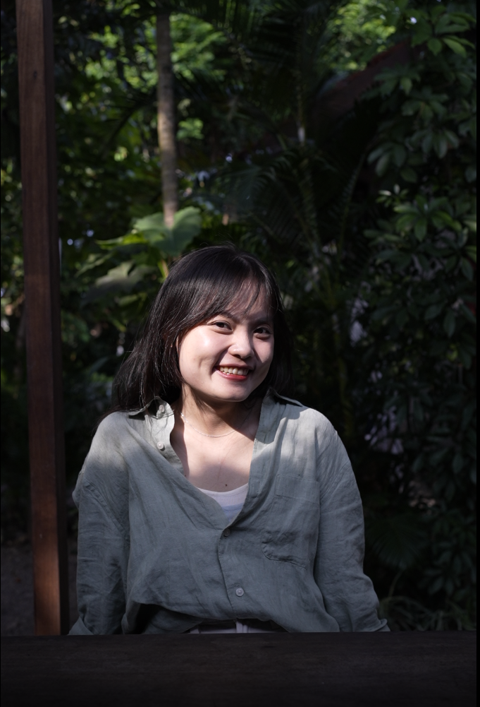

Six years of hands-on HR experience across software, gaming, and entertainment environments, with a practical focus on recruitment, engagement, and people operations.
I enjoy work that supports both people and clarity, from thoughtful hiring to well-structured people operations, documentation, and employee support.

I care about HR work that is both people-centered and well-structured. I enjoy helping employees feel welcomed, informed, and supported, while also keeping everyday processes clear, consistent, and practical.
Over the past six years, I have built hands-on experience across recruitment, employee engagement, internal communication, and people operations in software, gaming, and entertainment environments. I have also been involved in policy updates, contract and insurance coordination, and practical HR administration that supports compliant, employee-friendly operations.
As I continue growing in HR, I am especially interested in analytics, compensation and benefits, and labor-law-aware practice in Vietnam. For me, professional growth is not only about doing more, but about understanding people and the workplace more thoughtfully over time.
My work spans both people experience and day-to-day HR execution, with a focus on clarity, communication, and practical support.
A brief look at the roles and environments that have shaped how I work today.
My academic background in business administration has shaped how I approach HR with both people awareness and business understanding.
I use digital tools in practical ways to improve documentation, reporting, communication, and process efficiency in everyday HR work.
I value continuous learning that supports my work more thoughtfully, from language development to practical HR and analytical foundations.
I believe good HR work is often quiet, consistent, and thoughtful. These are the qualities I try to bring to my work.